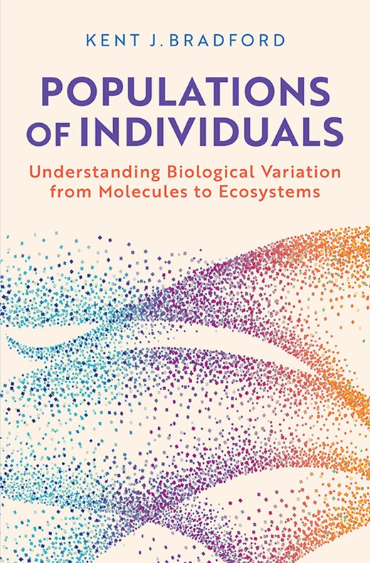

About the book
Populations of Individuals describes a novel way to view variation among biological entities based upon their individuality. While genetic differences can account for biological variation across species, within an individual organism the genetic code is essentially identical for all cells. Nonetheless, the cells of an individual can develop into the enormous diversity of distinct tissues and organs present in an organism. Such biochemical, physiological and developmental plasticity is influenced by both developmental and environmental factors, and it is often referred to as being due to “instability” or “noise.” While randomness is ubiquitous at the biophysical level, biology has harnessed that stochasticity and integrated it into its regulatory mechanisms at all levels of complexity, from molecules to ecosystems.
The key to this is to view interactions between biological components as involving a signaling factor and a receptor that exhibits a sensitivity threshold to respond to that factor. These sensitivity thresholds tend to vary among individual receptors in a normal distribution, such that as the factor level increases, more of the individuals are recruited to respond as their thresholds are exceeded. In addition, the amount by which the factor level increases above an individual’s threshold determines the speed of its response.
This population-based threshold (PBT) model describes biological variation literally from molecules to ecosystems, and it is particularly relevant today when methods for investigating individual molecules, nuclei, organelles, and cells are available. The PBT model can provide a coherent and mathematically consistent description of stable variation across the breadth of biology.
Explore the models
The rolling ball animations on the home page show how each part of the model works. You can plot model predictions yourself with the CoPlot tutorial, or fit the models to your own data with the PBTM Shiny app.